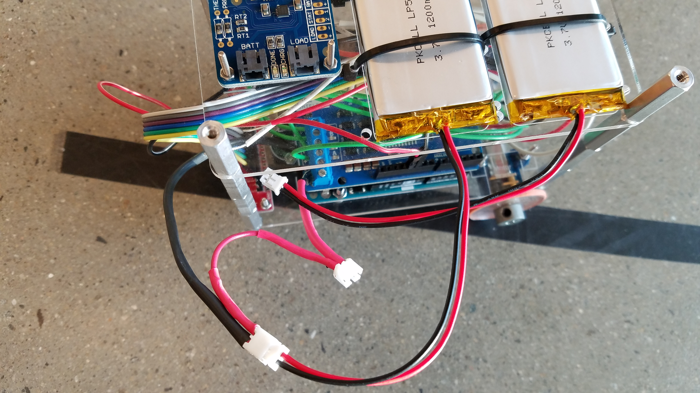

Thursday, November 16¶
(All videos on this journal entry are silent)
I soldered two JST connectors onto the motor shield so now I can plug in and unplug the LiPo batteries easily.
I finished the program of the robot in terms of following a line. The program is not very stable because:
- Calibrating the sensors is required before the robot is started, which, when done incorrectly, may affect performance. Specifically, the robot will be turning in a small circle. I have no idea why.
- It’s very dependent on the environmental light. The existence of shadows or the insufficiency of light will “break” the program, basically.
An example of incorrect calibration:
In the program today, I explored the idea of PID control. Specifically, the P and D. In terms of a line follower, this is pretty easy and does not require knowledge of calculus to actually implement the function. All you need is the general idea of how big the offset from P and D and tune the P constant and D constant accordingly. It’s a time consuming work to tune all the constants right. Basically, a process of trials-and-errors.
An example of P constant being too low but the robot is brought back by the D offset. I think this video somewhat shows the powerful part of PID control.
Finally, two videos of succeeded trial. As in the videos, the robot runs much smoother than yesterday.
The Code¶
#include <QTRSensors.h>
const int directionApin=12;
const int directionBpin=13;
const int powerApin=3;
const int powerBpin=11;
const int brakeApin=9;
const int brakeBpin=8;
QTRSensorsRC sensors((unsigned char[]) {2,4,5,6,7,10},6);
unsigned int sensor_values[8];
void setup() {
// put your setup code here, to run once:
pinMode(12,OUTPUT);
pinMode(3,OUTPUT);
pinMode(13,OUTPUT);
pinMode(11,OUTPUT);
pinMode (9, OUTPUT);
pinMode (8, OUTPUT);
pinMode (2, INPUT);
pinMode (4, INPUT);
pinMode (5, INPUT);
pinMode (6, INPUT);
pinMode (7, INPUT);
pinMode (10, INPUT);
Serial.begin(19200);
Serial.println("Started sensors calibration");
for (int i = 0; i < 250; i++)
{
sensors.calibrate();
delay(10);
}
Serial.println("Sensors calibration finished");
}
int lastError=0;
const float KP=0.0245;
const float KD=1;
const int M1=65; //left
const int M2=60; //right
void loop() {
unsigned int sensor_values[6];
int pos = sensors.readLine(sensor_values);
int error = pos - 2500;
int offset = KP * error + KD * (error - lastError);
Serial.print("Error: ");Serial.print(error);Serial.print(" |Offset P:");Serial.print(KP * error);Serial.print(" |Offset D:");Serial.println(KD * (error - lastError));
lastError = error;
int m1Speed = M1 - offset;
int m2Speed = M2 + offset;
Serial.print("Left: ");Serial.print(m1Speed); Serial.print(" Right: "); Serial.println(m2Speed);
if (m1Speed < 0)
m1Speed = 0;
if (m2Speed < 0)
m2Speed = 0;
if (m1Speed > 200)
m1Speed = 200;
if (m2Speed > 200)
m2Speed = 200;
powerMotors(m1Speed,m2Speed);
}
void powerMotors(int left, int right){
analogWrite(powerApin,left);
analogWrite(powerBpin,right);
}